Run Project Jupyter Notebooks On Amazon EC2
This is tutorial on running Project Jupyter Notebook on an Amazon EC2 instance. It is based on a tutorial by Piyush Agarwal which did not work for me immediately, but I tweaked a few things and got it working.
Note: This is not a beginner’s tutorial. I don’t explain some of the steps fully and don’t explain some concepts. There are other tutorials out there for that.
Create an AWS account
An EC2 instance requires an AWS account. You can make an account here.
Navigate to EC2
Log into AWS and go to the EC2 main page. Then you will see a ‘Launch Instance’ button.
Launch a new instance
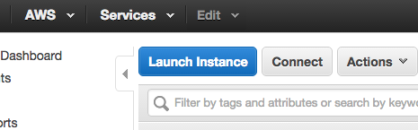
Select Ubuntu
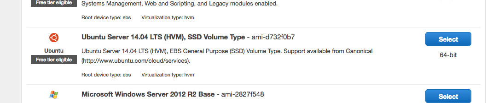
Select t2.micro
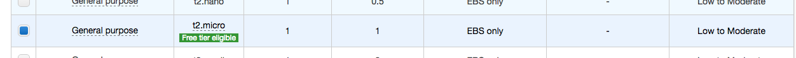
Check out your new instance
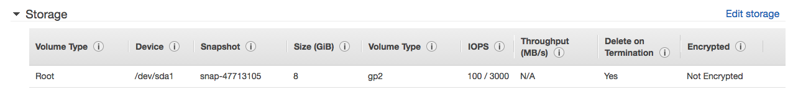
Create a new security group
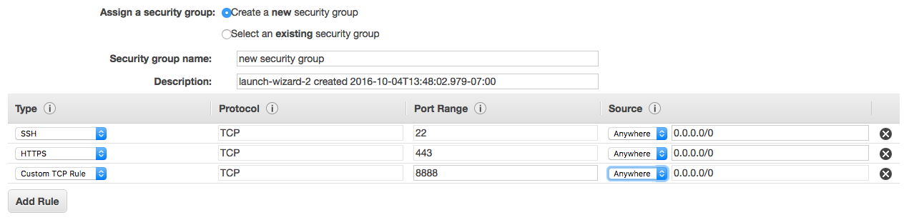
Create and download a new key pair
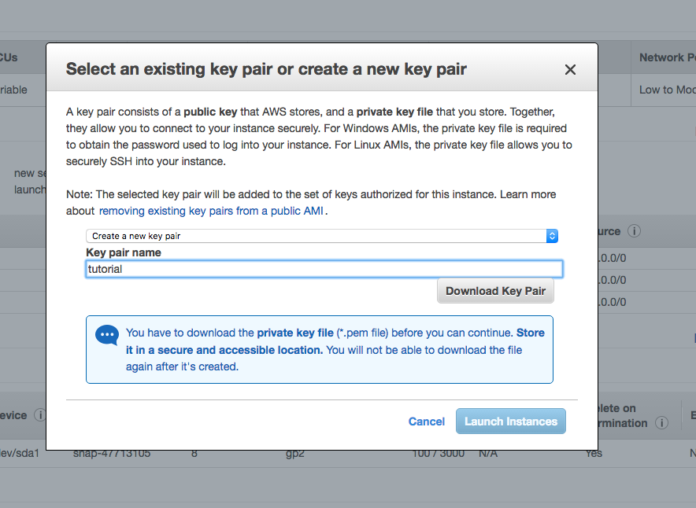
View connect instructions
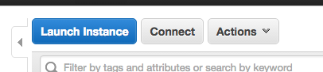
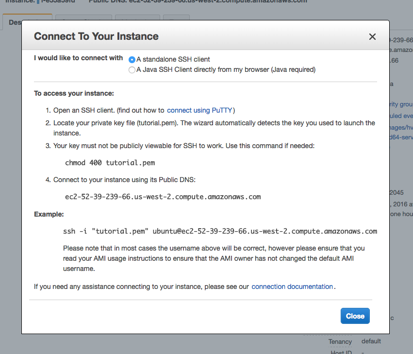
Set permissions on key pair
chmod 400 tutorial.pem
Open terminal
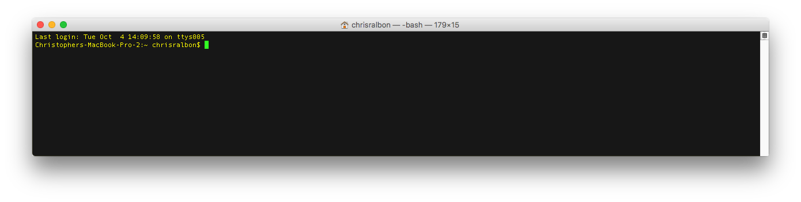
Connect using ssh
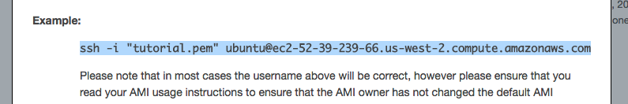
ssh -i "tutorial.pem" [email protected]
Are you sure you want to continue connecting (yes/no)?
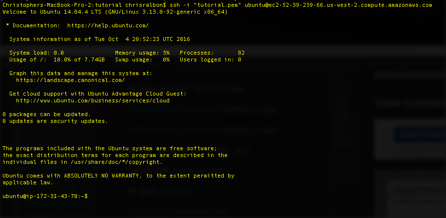
Download Anaconda to instance
Visit Anaconda’s download page and right click to get the url of the latest version of the Linux 64-bit version. In my case this url was:
https://repo.continuum.io/archive/Anaconda3-4.2.0-Linux-x86_64.sh
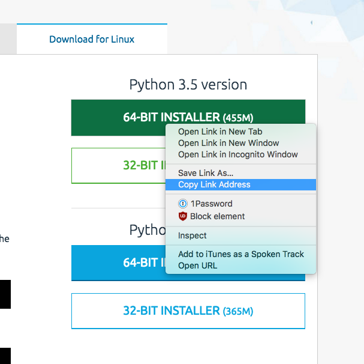
Now, back in the terminal, tell the EC2 instance to download that file. Note: You aren’t downloading the file to your computer, you are downloading it to the EC2 instance and installing it from there.
wget https://repo.continuum.io/archive/Anaconda3-4.2.0-Linux-x86_64.sh
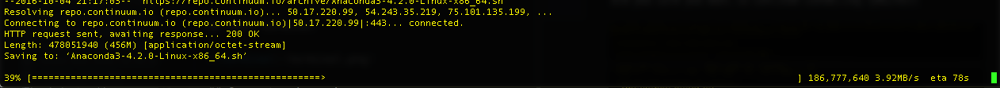
Install Anaconda
bash Anaconda3-4.2.0-Linux-x86_64.sh
Press enter a few times
Type ‘yes’ to agree
‘Press ENTER to confirm the location’
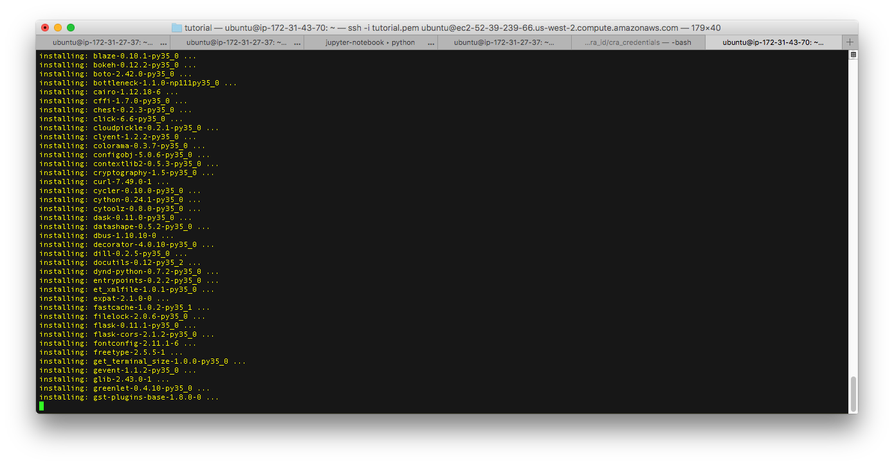
Do you wish the installer to prepend the Anaconda3 install location
to PATH in your /home/ubuntu/.bashrc ? [yes|no]
[no] >>> yes
If it doesn’t allow you to answer yes, you can manually set it through the prompt they show:
You may wish to edit your .bashrc or
prepend the Anaconda3 install location:
$ export PATH=/home/ubuntu/anaconda3/bin:$PATHCheck that Anaconda is the preferred environment
which python
/home/ubuntu/anaconda3/bin/python
Create a password for jupyter notebook
ipython
from IPython.lib import passwd
passwd()
Enter password: [Create password and press enter]
Verify password: [Press enter]
'sha1:98ff0e580111:12798c72623a6eecd54b51c006b1050f0ac1a62d'
exit
Create config profile
jupyter notebook --generate-config
Create certificates for https
mkdir certs
cd certs
openssl req -x509 -nodes -days 365 -newkey rsa:1024 -keyout mycert.pem -out mycert.pem
Answer questions
Configure jupyter
cd ~/.jupyter/
vi jupyter_notebook_config.py
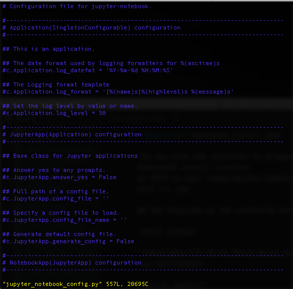
Insert this at the beginning of the document:
c = get_config()
# Kernel config
c.IPKernelApp.pylab = 'inline' # if you want plotting support always in your notebook
# Notebook config
c.NotebookApp.certfile = u'/home/ubuntu/certs/mycert.pem' #location of your certificate file
c.NotebookApp.ip = '0.0.0.0'
c.NotebookApp.open_browser = False #so that the ipython notebook does not opens up a browser by default
c.NotebookApp.password = u'sha1:98ff0e580111:12798c72623a6eecd54b51c006b1050f0ac1a62d' #the encrypted password we generated above
# Set the port to 8888, the port we set up in the AWS EC2 set-up
c.NotebookApp.port = 8888
Remember to replace sha1:98ff0e580111:12798c72623a6eecd54b51c006b1050f0ac1a62d with your password!

Press esc
Press shift-z
Create folder for notebooks
cd ~
mkdir Notebooks
cd Notebooks
Create new screen
This command allows you to create a separate screen for just your Jupyter process logs while you continue to do other work on the ec2 instance.
screen
Start Jupyter notebook
sudo chown $USER:$USER /home/ubuntu/certs/mycert.pem
jupyter notebook
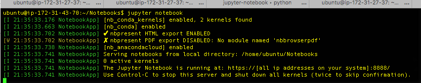
Detach from screen
Command: Ctrl-a and then d
Other useful commands:
- Create new window:
Ctrl-ac. - Switch windows:
Ctrl-an - Reattach to Screen:
screen -r - See running screen processes
screen -ls
Visit Jupyter notebook in browser
Your EC2 instance will have a long url, like this:
ec2-52-39-239-66.us-west-2.compute.amazonaws.com
Visit that URL in your browser: (make sure to include the https at the beginning, or you’ll have access errors.)
https://ec2-52-39-239-66.us-west-2.compute.amazonaws.com:8888/
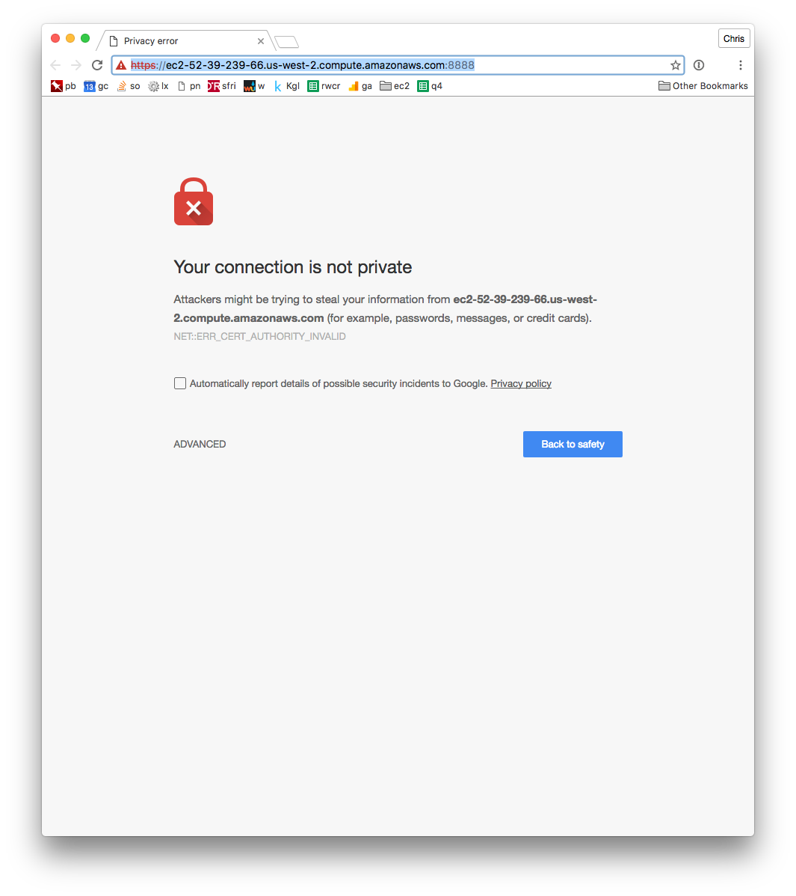
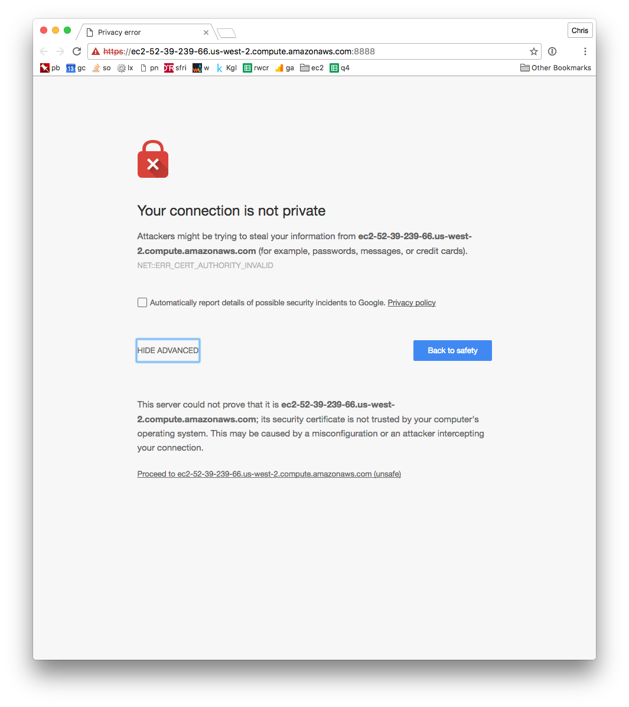
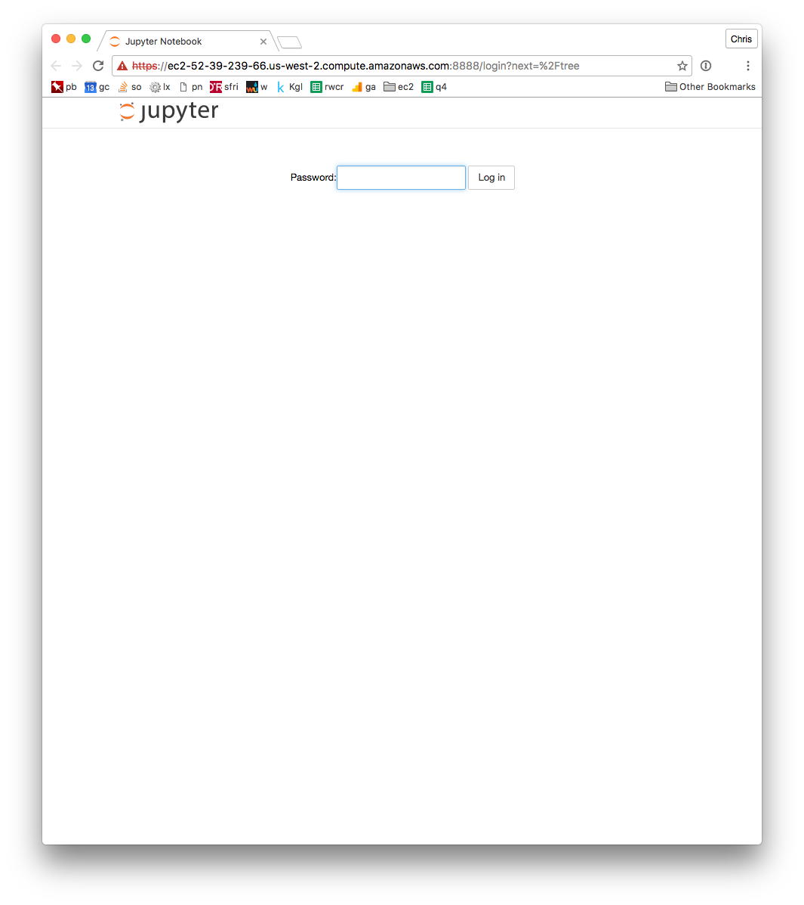